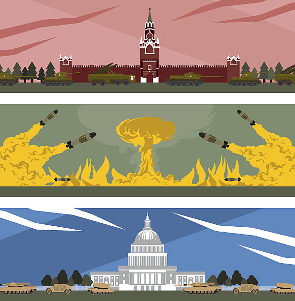

The first iteration of the worldwide web was called Arpanet. This was created by the US Government within colleges because of the cold war with the Soviet Union in the 1960s. The reason why it was created in this time was because of fear of a nuclear attack on the mainland United States which knocks out communication from head of command which is The President of the United States at the time to the rest of the military. Colleges were used as hubs to connect to each other to pass on information on the Arpanet. In the 1970s, this eventually made its way to Europe, were it was first introduced to London. This is now the first ever non- US Arpanet link. Also in this time the term internet is made to describe what the Arpanet is.
In the 1980s, the internet is now global. In 1989 the worldwide web was created and became its on official part of the internet. In 1991 the worldwide web is opened to the public for public use of exchange of information such as on scientific papers. For the public to use the internet, a web browser had to be created which the first ever web browser was called Mosaic.
In the 2000s, connection to internet became a norm in public life. Nearly everyone in a city had a internet connection, but this was yet to expand to rural areas. This made it a lot easier to connect to people through web emails and e-commerce. Near the end of the 2000s, we see the rise of social networks such as YouTube, Facebook and twitter. The 2010s became known as the era of social media dominance and would become the main chunk of the World Wide Web and in 2019 the internet became 50 years old.
In the 2020s, we see a massive increase in the use of the internet in e-commerce, socials and also working from home due to the impact of the coronavirus epidemic. TikTok became the main social in this time and took off to become the top social media used on the worldwide web. We also see a new era coming on the horizon of cryptocurrencies.